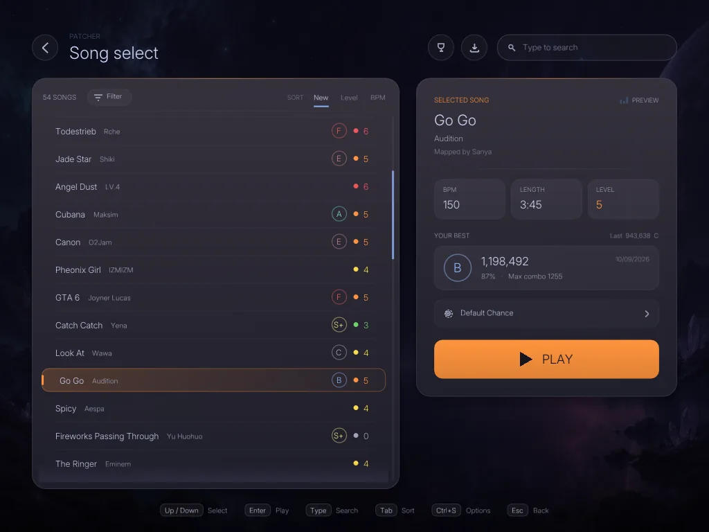

BeatUp Guide · 30 Pages · PDF
BeatUp Charting Guide (PDF)
Complete illustrated BeatUp workflow from Silencer audio preparation, BPM & offset timing, and editor basics to 6K charting, Auditor review, and export.
BeatUp Engine · Private Build · v1.5.1
A private Windows rhythm-game engine with a single-timebase chart editor, Direct3D 11 Flip Model renderer, patcher, and Auditor Mode. Maintained strictly inside Engine Launcher — no public downloads exist.

01 · Chart editor
Editor and game share one time base, so a note you place is judged exactly as it will be played.
A waveform strip next to the eight columns 7 · 4 · 1 · 9 · 6 · 3 · Space · Finish, with snap grid, beat and MADI markers.
Play, pause and seek. BPM, beat, MADI, combo and maximum score update while you work.
The chart runs in the real game view with judgments, score and receptors. Split View keeps editor and game side by side.
Screenshot from a v1.0.x build.
02 · Play and patch
The same engine that you edit with is the one you play on.
Run the charts in your charts folder straight from the main menu, with inline Delete .bu confirmation and F5 Refresh.
Perfect timing is configurable; Great, Cool, Bad and Miss follow refined rules. Chance modes such as Rapid, Vanishing and Wave change how notes arrive.
Receptor bar and colours are themeable. The optional Challenger Mode makes runs stricter.
Browse songs with rankings, check BPM, length and level, then press Play. The Patcher validates required content and applies each song's timing offset.



Screenshots from v1.0.x builds.
03 · Auditor Mode Telemetry 2.0
Auditor Mode makes chart revisions traceable. It opens in its own native refresh-rate window and detects the BPM of a .slk from the music and the chart.
Open a .slk or .bu. The Auditor lists duplicate arrows, arrow and Space in one row, Finish problems, empty charts, invalid BPM and long gaps. Click an entry to jump to that row.
Fix the chart in the normal editor. New notes get a green frame, removed notes a red ghost. The compare view shows original and revision side by side.
Every change is written to a .csv log next to the chart. In an audit project the original, the revision and the log travel together in one .bu.
Nr;Action;Note;Lane;Before;After;Operation 1;OPEN;Session;;;;open 2;MOVE;Arrow;9;9 @ M0:04;9 @ M0:06;move 3;REMOVE;Arrow;3;3 @ M0:08;-;delete 4;ADD;Arrow;7;-;7 @ M1:04;place note 5;BPM;BPM;;120;121;bpm change 6;LANE;Arrow;6;9 @ M0:10;6 @ M0:10;mirror 7;SAVE;Session;;;;save project
Illustration with example data, not a screenshot.
04 · Features
Timing, gameplay, editing, Direct3D 11 Flip Model rendering, the chart assistant, project files, patching and the Auditor in one program.
Native Direct3D 11 Flip Model rendering removes modern RTX frame caps while 1000Hz+ polling lowers input-to-draw latency.
Gameplay graphics and hit detection use one time base, with configurable Perfect timing and refined Great, Cool, Bad and Miss behaviour.
Receptor Bar, Split View, vertical or horizontal canvas, waveform, beat and MADI navigation, selection, copy/paste replacement and undo/redo.
.bu projects keep audio, BPM, offset, notes, speed and the saved playback position together for a complete editing session.
Change the core interface colours, waveform, minimap and Receptor Bar with a live preview and persistent theme.ini themes.
Rapid, Vanishing, Wave, Inverted, Speed Up and Halfway Chance modes, with the optional Challenger Mode for stricter runs.
Detects BPM, beats and transients and proposes an editable chart draft that follows the song, with Spaces on the MADI and sections by intensity.
An optional overlay for frame times, audio stalls, input delay, renderer and memory, with an exportable report for hardware diagnostics.
Open a .slk or .bu, inspect anomalies, compare original vs. revision side by side, and export semicolon-separated CSV telemetry.
Shares .bue_session charter identity, profile pill, differential encrypted .enc updates, and inline .bu file controls.
05 · Video
A tour of the editor, the Patcher and the core workflow. The video loads from YouTube only after you press play.
06 · BeatUp Documentation & PDFs
The illustrated BeatUp Charting Guide is offered as a 30-page PDF — browse it page-by-page in the web viewer or open the original PDF file directly alongside the BeatUp + Silencer Manual.
Complete illustrated BeatUp workflow from Silencer audio preparation, BPM & offset timing, and editor basics to 6K charting, Auditor review, and export.

Installation, editor hotkeys, options, Patcher library setup, judgment rules, timing calibration, and troubleshooting in PDF format.
07 · Version History
Complete development lineage from early v0.2 builds through the v1.2 Auditor milestone up to the current private v1.5.1 D3D11 Flip Model builds.
| Category | Build | Changes in v1.3 – v1.5.1 |
|---|---|---|
| Direct3D 11 Backend & Flip Model | Private | Native Direct3D 11 backend with DXGI Flip Model architecture, resolving the 290 FPS cap on modern Windows 11 and NVIDIA GeForce RTX hardware. |
| Combo Caching & Shaders | Private | Zero-allocation combo text caching, single-pass foreground border/shadow rendering pipeline, and corrected diagnostics timing overlay. |
| Engine Launcher Integration | Private | Seamless handshake with Engine Launcher, differential delta patching, automated integrity checks, and encrypted .enc payload verification. |
| Input & Timing Pipeline | Private | High-polling rate input handling (1000Hz+ keyboard/numpad polling), reduced input-to-draw frame latency, and sub-millisecond judgment precision. |
| Auditor Telemetry 2.0 | Private | Expanded automated chart anomaly detection, lag-free native monitor refresh rate Auditor sync, and extended CSV telemetry export. |
| Chart Manager & Profile Pill | v1.5.1 | Play Your Chart includes Delete .bu with inline confirmation (Del), Open Folder button, F5 Refresh badge, plus Launcher-synced Profile Pill with avatar & HWID copy. |
| Version | Date | Changes |
|---|---|---|
| v1.2 | Oct 2026 | Auditor Mode with chart inspection, CSV audit log, change tracking, side-by-side comparison, audit projects, independent window, and automatic BPM. |
| v1.1 | 2026 | Chart Assistant with automatic BPM detection, drag & drop, built-in metronome, optional Engine Diagnostics, faster editing workflow and autosave. |
| v1.0.1 | 2026 | Play your chart, music inside .bu projects, unified Options window, optional Patcher, single-executable build, BeatUp Night theme. |
| v1.0 | 2026 | First stable release: new ranks and result card, compact score bar, snap hotkeys, Numpad Charting, bookmarks in projects. |
| v0.6.1 | 24 Sep 2026 | Receptor Bar in Editor, receptor theming, per-song Patcher offsets. |
| v0.6 | 21 Sep 2026 | Theme Editor, redesigned menu, onboarding, Split View and judgment rework. |
| v0.5.1 | 18 Sep 2026 | Onboarding, menu/Patcher redesign, Perfect positioning and judgment refinements. |
| v0.5 | 17 Sep 2026 | Challenger Mode, borderless fullscreen, 2K/4K support, DPI handling and .bu association. |
| v0.4 | 13 Sep 2026 | Unified timing, animated arrows, .bu projects, colored snap grid and import/export. |
| v0.3 | 10 Sep 2026 | Patch management, file validation and missing-content recovery. |
| v0.2.x | Sep 2026 | Patch Manager, waveform, selection, copy/paste replacement, undo/redo and customization. |
08 · Private Distribution
All builds of BeatUp Engine are private. No standalone installers, portable ZIPs, or external mirror downloads are distributed publicly.
Private Build · v1.5.1
09 · Credits
Shaped by the players, testers and charters of the BeatUp community who tested builds, reported bugs, and shared charts and ideas.